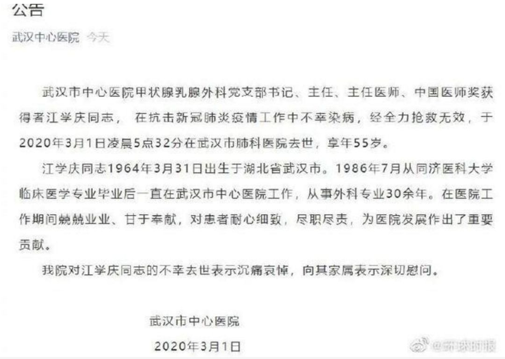

他们接管了“重灾区”
原文链接 备份链接 中青报·中青网见习记者 李强/摄 中青报·中青网见习记者 李 强 编辑 从玉华 脚下的地，是黏的。那是泼洒在地面上的药水得不到及时清洗造成的。 57岁的郭亚兵很少在医院碰到这样的情形，即使是17年前在北京小汤山医院抗 …
别了，老江……
老江，走了……
麻醉科的医生喊他老江，医院领导私下喊他老江，搞熟了的病人，也喊他老江，除了他手下的兵当面不敢叫，我们都叫他老江，从什么时候开始，大家都忘了。
年轻时先搞的胃肠，刚当上主任不久，做手术碰到事，事情平息了，出国学习一段时间，回来转行，带着几个胸外的，肝胆的，还有啥忘了反正乱七八糟一大杂烩，就十来年吧，把一个小小的甲乳外科，做到年收入快两个亿，在武汉一三甲医院外科系统，遥遥领先独领风骚一直至今，羞煞了无数大外科，全国上下，估计也就他独一份吧？
按理说，应该很牛逼，自带气场，但他从没有。曾经有个报道评论他多少度暖男，多少度不记得了，但真的暖！
五年前，我刚刚当上医院第一个科主任，天天加班，我们科的手术要吃射线，科室又小，所以我经常手术被排到三更半夜才上去，而老江又是名副其实的医院劳模，三更半夜才下来，所以我跟他经常碰到。有一天更衣室碰到了，老江下手术，我上手术，他把我肩膀一拍，说，兄弟，别太拼了，射线吃太多伤身体，带个围脖把甲状腺护着！哪天做个彩超，给我看看。医院的所有非他科室的男职工，无论大小，他都喊兄弟，女职工喊啥不知道。反正我在医院十七年，只见过他笑，就没见过他端架子。

对医生同事如此，对病人，更暖，我还在麻醉科的时候，手术室工作的同事，都说他是中年妇女之友。那时候，只要是甲乳外科的手术，那些病人在麻醉之前，都要见他一眼才让我们推药，经常有些病人都是牵着他的手，看着他的笑容被我麻翻的。那时候大家都背后议论，这哪里是医患，分明是情人。
时间一天天的过，老江从风华正茂，到两鬓斑白，从年轻帅气的小江，变成名副其实甘为人梯的老江，经历了一代又一代的领导，但他的牛逼，始终是我们医院最大的传说。
只听说找老江看病的，基本没听说找老江扯皮的。就这么一主任，就这么一人，平时那么大声，手术碰到突发状况也那么大声，只要他在，他的手术无论碰到多危险的状况，麻醉医生，手术室护士，他的助手心都是稳的，老江在，有何惧哉？
不长眼的疫情，还是来了，当大家知道老江被感染了，纷纷要去看他，他还清醒的时候都是把同事们往外赶，一边赶，一边笑着说，兄弟们，会死人的，走走走！
结果，今天，他走了。啥都没带走，只留给我们，一个温暖的背影。不知不觉，他用他的笑容，感染了我们数千职工，给我们无数小医生前行的动力，学习的榜样，和兄长般的关怀。我们还没来得及感谢他，老江就这么的走了。那节假日都如同菜市场一般的特有的老江专家门诊，只会被放上无数的鲜花，无数的祭奠，可谁以后能延续他的传说，他的患者，今后又有谁来照料？
一个伟大的人，从来都不靠装逼摆酷被吹捧，就那么一笑，那么一拍肩，就让你记一辈子，学一辈子。
总说逝者已矣，活着的人，还要负重前行，这句话我这段时间都说的有些麻了。老江走了，我第一感觉，是麻了，过了一下，才想到要哭，要写！这场战役，没有硝烟，却不知不觉，带走了我多少战友，让我心痛，心痛到麻木。
为什么我们还没有倒下？为什么还有那么多明知山有虎，偏向虎山行来支援我们的外地医疗队战友？为什么到今天，仍然有那么多对我们不断伸出援助之手两个面罩就要捐医生一个的热心老百姓？为什么有那么多冒着风险不辞劳苦往医院送物资的志愿者？为什么整个大武汉，乃至整个大中华，面对泰山压顶亦面不改色坚定前行？
为什么？其实没有为什么，因为我们都知道该这么做，都想这么做。
本来我这趟接待医疗队任务刚完，想发个圈，让大家感受到全国上下对武汉的支持，短短数日，两千多外地医疗队老师，进驻了武汉市中心医院，基本把我们全换下来休整。这个一方有难，八方支援的情怀，能力，也只有大中国，才有，才具备！
但是，老江等不到了，但我们都相信，他在天上，会笑着看着我们，为我们鼓劲，陪我们前行！
老江，一路走好。武汉市中心医院，记着老江的暖，老江的笑，擦干眼泪，我们一起加油！
——武汉市中心医院蔡毅，2020年3月1日

原文链接 备份链接 中青报·中青网见习记者 李强/摄 中青报·中青网见习记者 李 强 编辑 从玉华 脚下的地，是黏的。那是泼洒在地面上的药水得不到及时清洗造成的。 57岁的郭亚兵很少在医院碰到这样的情形，即使是17年前在北京小汤山医院抗 …
原文链接 备份链接 澎湃新闻记者 李佳蔚 郁斐 制图 进驻武汉第一天，上海医疗队就知道，要治愈的不仅是患者身体，治愈出院也不会是服务终点。 时至今日，事实证明他们做得不赖。 2月7日，上海中山医院第四批医疗队进驻武汉大学人民医院东院，整建 …
原文链接 备份链接 摘要：截至2月17日，全国已有3.2万余名医护人员支援湖北，支持湖北实现“应收尽收、应治尽治”。2月7日，其中一支医疗队的领队、复旦大学附属中山医院副院长朱畴文率领的136人队伍奉调入鄂，一天后接管了武汉大学人民医院东 …
原文链接 备份链接 【财新网】（记者 吴红毓然 王梦遥 杨睿 冯华妹 唐爱琳 苑苏文）又有医生在抗击疫情前线不幸染上新冠肺炎去世。3月3日中午12时，武汉市中心医院眼科副主任、主任医师梅仲明，感染新冠肺炎去世，得年57岁。武汉市中心医院已 …
原文链接 备份链接 我是一个江苏人，在北京上班，在武汉买个房子，娶了个湖北媳妇。我和媳妇很早前就商量好春节在两家轮流过，今年，刚好轮到去黄冈的丈母娘家。 我们从北京坐Z53到武汉，再从宏碁汽车客运站转大巴到黄冈浠水县媳妇家里，已经是1 …